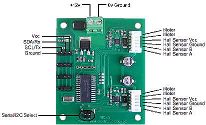
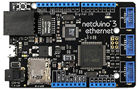

Sommaire
- LE MATERIEL
- La carte MD25 - Dual 12Volt 2.8Amp H Bridge Motor Drive
- Les cartes Netduino
- Les cartes FEZ
- LE LOGICIEL
1. LE MATERIEL
1.1 La carte MD25 - Dual 12Volt 2.8Amp H Bridge Motor Drive
- Présentation
- Alimentation : 12 Vcc (un régulateur 5 Vcc intégré délivre 300 mA pour l’électronique de commande externe).
- Possibilités: Plusieurs platines peuvent être pilotées en même temps via un bus I2C™
- Dimensions: 70 x 60 x 25 mm.
- Documentation : MD25 - Dual 12Volt 2.8Amp H Bridge Motor Drive
- Distributeur : Lextronic
Destinée à être commandée par un microcontrôleur au moyen d'une liaison série (niveau logique 0 - 5 V) ou via un bus I2C™,
cette platine électronique intègre un double pont en "H" permettant le pilotage indépendant de 2 moteurs à courant continu avec encodeur (consommation: 2,5 A max. par moteur).
Des ordres simples permettent de définir le sens de rotation ainsi que la
vitesse des moteurs, de lire les informations en provenance des encodeurs, de lire les valeurs de la tension et du courant
consommé par les moteurs, de connaître leur vitesse de rotation, de définir les accélérations, etc...

1.2 Les cartes Netduino
Secret Labs
- Microcontrôleur : STM32F405RG 32 bits à architecture Cortex-M4 cadencé à 168 MHz.
- RAM : 164KB+.
- Flash : 1408KB.
- Port Ethernet : 10/100Mbps (Wifi:802.11b/g/n)*.
- E/S numériques : 22
- Entrées analogiques : 6
- Stockage: carte µSD
- IDE : Microsoft Visual Studio
- Framework : .NETMF 4.3
- Langages de programmation : C#, VB
- Compatibilité : shield Arduino, Gadgeteer
|  |  |
| Netduino 3 Ethernet | Netduino 3 wifi* |
- Sites à consulter : Netduino, NETMF
- Distributeurs : Mouser Electronics
1.3 Les cartes FEZ
GHI Electonics (Extrait)
- Microcontrôleur : 180 MHz 32-bit ARM Cortex-M4.(120 MHz 32-bit ARM Cortex-M3 )*
- SoC(SoM)* : G80 G120*
- RAM : 156 KB(2.87 MB)*.
- Flash : 256 KB (13.67 MB)*.
- E/S numériques : 53(60)*
- Entrées analogiques : 16(8)*
- Réseaux : Ethernet TCP/IP, WiFi, and SSL.
- Stockage: carte µSD
- IDE : Microsoft Visual Studio
- Framework : .NETMF 4.3
- Langages de programmation : C#, VB
 |
 |
| PANDA III | COBRA III* (compatible Gadgeteer) |
- Sites à consulter : GHI ELECTRONICS, NETMF
- Distributeurs : Mouser Electronics
2. LE LOGICIEL
2.1 Contenu du répertoire proposé au téléchargement
Le répertoire proposé au téléchargement (au format zip ou tar.gz) contient la solution NetduinoMD25 composée:
- Du projet MD25 : le code source de la classe MotorControlMD2x.
- Du projet Netduino : un exemple d'utilisation de cette classe avec une carte Netduino.
- Du projet FezPanda : un exemple d'utilisation de cette classe avec une carte Panda.
2.2 Le NuGet MicroToolsKit
La dernière version compilée de la classe MotorControlMD2x se situe dans la bibliothèque MicroToolsKit disponible sur nuget.org.

Organisation des classes contenues dans MicroToolsKit [lien]
Important : Installer ce nuget dans le projet Visual Studio simplifie l'utilisation de la classe.
2.3 Les Wikis
- Fascicules d'exemples de code pour les cartes Netduino. [lien]
- Fascicule d'exemples de code pour les cartes FEZ. [lien]
2.4 Description et utilisation de la classe MD2x
- Rôle: Contrôler deux motoréducteurs équipés d'un encodeur via le bus I²C.
- Assembly: MicroToolsKit (disponible sur nuget.org)
- Espace de noms: Microtoolskit.Hardware.MotorDrivers
Création d'un projet avec l'IDE Visual Studio
- Créer un nouveau projet en suivant la démarche décrite dans le chapitre "Premier programme en C# étape par étape" du Wiki dédié à une carte Netduino ou du Wiki dédié à une carte Fez. Ces Wikis sont accessibles ici.
- Utiliser le gestionnaire de paquets NuGet pour ajouter la bibliothèque MicroToolsKit ( nuget.org) dans le projet. (Dans l'explorateur de solution, clic droit sur les Références du projet puis choisir Gérer les packages NuGet.... Installer le paquet.)
- Ajouter l'espace de noms Microtoolskit.Hardware.MotorDrivers dans l'en-tête du fichier source.
- Créer un objet en utilisant un des constructeurs MotorControlMD2x.
- Régler la fréquence de rotation des moteurs avec la méthode SetSpeedTurn.
- etc...
Exemple
using System;
using System.Threading;
using Microsoft.SPOT;
using Microtoolskit.Hardware.MotorDrivers;
namespace NetduinoMD25
{
public class Program
{
public static void Main()
{
var MD25 = new MotorControlMD2x();
// Pour info : Lecture des registres de la carte MD2x et affichage de la version du logiciel
Debug.Print("Vers.=" + MD25.SoftRev.ToString());
Debug.Print("Tension=" + ((Single)MD25.Battery / 10).ToString("N1") + "V");
Debug.Print("Acceleration=" + MD25.AccelerationRate.ToString());
Debug.Print("Mode=" + MD25.Mode.ToString());
while (true)
{
// Essai : Rotation des moteurs jusqu'à ce que la distance recherchée soit atteinte
// ---------------------------------------------------------------------
MD25.RazEncoders(); // Remise à zéro des codeurs
MD25.SetSpeedTurn(140, 140); // Réglage de la vitesse des moteurs
while (MD25.Encoder1 < 2000)
{
Debug.Print("Codeur 1=" + MD25.Encoder1.ToString() + " " + "Codeur 2=" + MD25.Encoder2.ToString() +
" Speed1=" + MD25.Speed1.ToString() + " Speed2=" + MD25.Speed2Turn.ToString());
}
MD25.StopMotor(); // Arrêt des moteurs
Thread.Sleep(5000);
}
}
}
}
Constructeurs
| Syntaxe | Description | |
 |
MotorControlMD2x() | Instancie un objet "carte MD25". SLA = 0x58 (par défaut). Frequency : fréquence du bus I²C = 100kHz (par défaut) Exemple var MD25 = new MotorControlMD2x(); |
|
MotorControlMD2x(UInt16 SLA) | Instancie un objet "carte MD25". SLA: à définir dans l'intervalle [0x58,0x5F]. Frequency: fréquence du bus I²C = 100kHz Exemple var MD25 = new MotorControlMD2x(0x59); |
|
MotorControlMD2x(UInt16 SLA, UInt16 Frequency) | Instancie un objet "carte MD25". SLA: à définir dans l'intervalle [0x58,0x5F]. Frequency: fréquence du bus I²C à définir dans l'intervalle [100kHz,400kHz]. Exemple var MD25 = new MotorControlMD2x(0x58,200); |
Enumérations
| Syntaxe | Description | |
| ModeRegister |
Mode 0, Mode 1 Commande indépendante des deux moteurs. Mode 2, Mode 3 -Speed 1 définit la vitesse médiane des deux moteurs. -Speed 2 définit le diférentiel de vitesse à appliquer en + ou en - à chaque moteur. Effet des paramètres de la méthode SetSpeedTurn : ValSpeed1 et ValSpeed2 dans les différents modes.
|
Propriétés
| Syntaxe | Description | |
 |
Speed1 | Retourne la consigne de vitesse du moteur 1. Octet non signé. Exemple Debug.Print("Speed1=" + MD25.Speed1.ToString()); |
|
Speed2Turn |
En cours de rédaction.
|
|
Encoder1 | Retourne la valeur de l'encodeur 1 (calculée à partir des registres Enc1a,b,c et d). Mot de 32bits signé. Exemple Debug.Print("Codeur 1=" + MD25.Encoder1.ToString()); |
|
Encoder2 | Retourne la valeur de l'encodeur 2 (calculée à partir des registres Enc2a,b,c et d). Mot de 32bits signé. Exemple Debug.Print("Codeur 2=" + MD25.Encoder2.ToString()); |
|
Battery | Retourne la tension d'alimentation (x10) de la carte en (V). Octet non signé. Exemple Debug.Print("Tension=" + ((Single)MD25.Battery / 10).ToString("N1") + "V"); |
|
Current1 | Retourne l'intensité du moteur 1 en (A). Octet non signé. Exemple Debug.Print("I_moteur 1=" + MD25.Current1.ToString()); |
|
Current2 | Retourne l'intensité du moteur 2 en (A). Octet non signé. Exemple Debug.Print("I_moteur 2=" + MD25.Current2.ToString()); |
|
SoftRev | Retourne le numéro de version du logiciel de la carte MD25. Octet non signé. Exemple Debug.Print("Vers.=" + MD25.SoftRev.ToString()); |
|
AccelerationRate | Fixe ou retourne l'accélération programmée lors d'un changement de vitesse. Octet non signé. Exemple // Pour connaître la valeur de l'accélération Debug.Print("Acceleration=" + MD25.AccelerationRate.ToString()); // Pour fixer la valeur de l'accélération byte MD25.AccAccelerationRate = 1; |
|
Mode | Retourne le mode de fonctionnement de la carte 0,1,2 ou 3. Octet non signé. Exemple // Pour connaitre le mode de fonctionnement de la carte Debug.Print(Mode=" + MD25.Mode.ToString()); |
|
Command | Fixe ou retourne le contenu du registre de commande. Octet non signé. Exemple Debug.Print("" + ); |
|
TransactionTimeOut | Fixe ou retourne le temps (en ms) accordé à la transaction avant la génération d'une System.IO.Exception. 1000ms par
défaut. Type : ushort Exemples // Pour régler la durée maximum d'une transaction à 200ms. MD25.TransactionTimeOut = 200; // Pour connaître la durée maximum accordée à une transaction ushort time = MD25.TransactionTimeOut; |
Méthodes publiques
| Syntaxe | Description | |
|
void GetAllRegister() | Lecture des 16 registres de la carte MD25. |
|
void RazEncoders() | Remise à zéro des deux encodeurs. |
|
void SetMode(ModeRegister valmode) | Définit le mode de fonctionnnement de la carte valmode=0, 1,2 ou 3. |
|
void SetSpeedTurn(byte ValSpeed1, byte ValSpeed2Turn) | Règle la vitesse des moteurs. |
|
void StopMotor() | Arrêt des deux moteurs. |